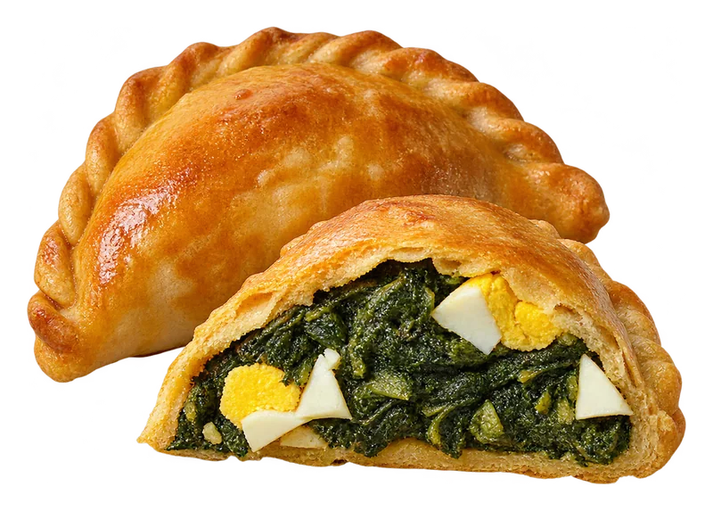
Empanadilla de espinacas y huevo
Hasta arriba de relleno, con masa casera. También la hay de habas con longaniza.
EncargarHorno de barrio en Jesús con obrador propio. Lo que ves en la vitrina sale de aquí mismo.
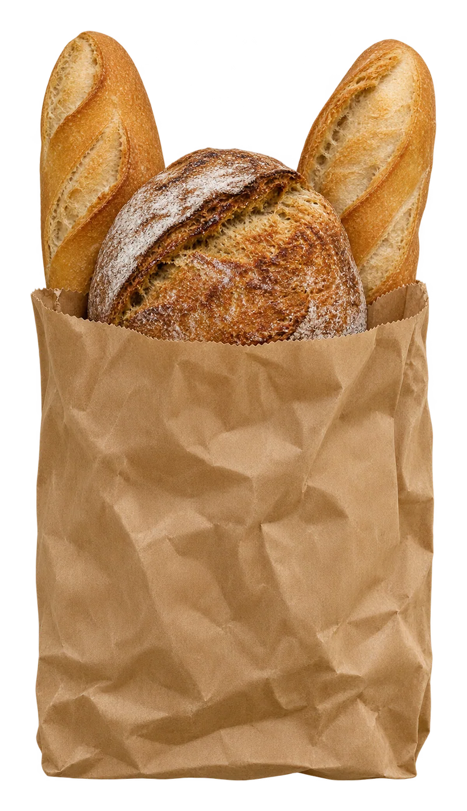
Dulce y salado

Hasta arriba de relleno, con masa casera. También la hay de habas con longaniza.
EncargarBrillante, con hilos de chocolate y pistacho picado. Recién hecho por la mañana.
Encargar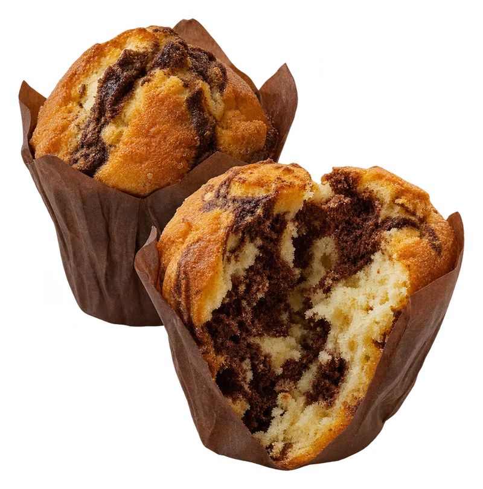
Vainilla y chocolate en espiral, alto y esponjoso. El capricho de la merienda.
Encargar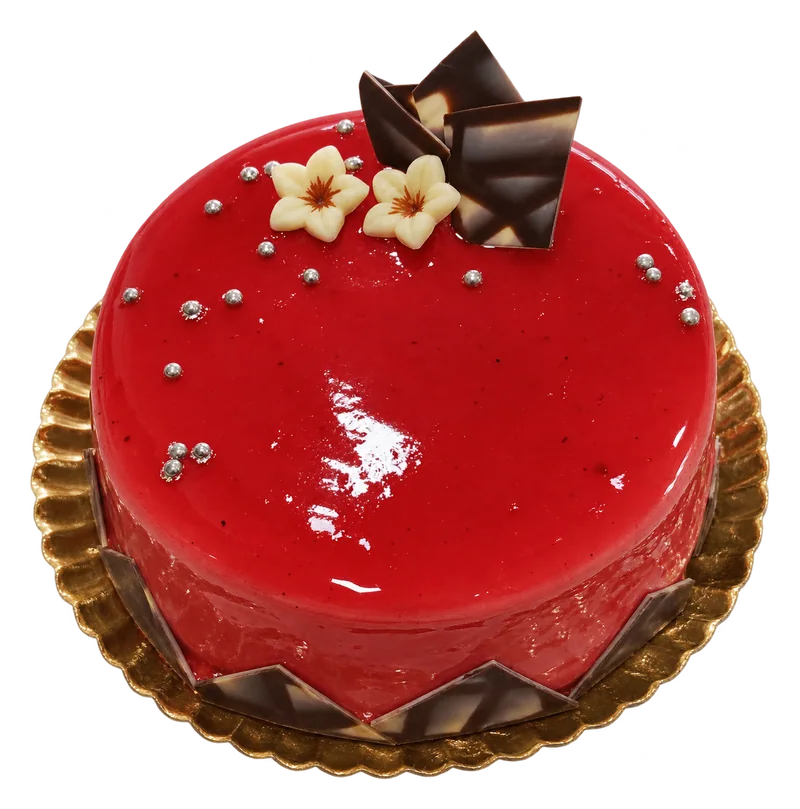
Mousse de fresa con glaseado espejo. Por encargo, del tamaño que necesites.
Encargar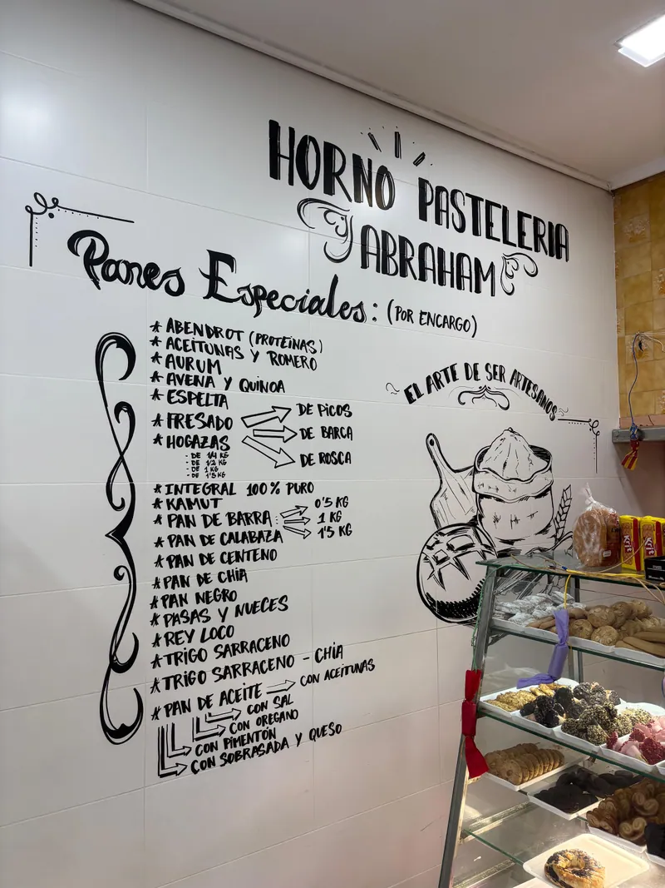
El arte de ser artesanos
Somos un horno pequeño, de barrio. Amasamos y horneamos en nuestro propio obrador, así que lo que ves en la vitrina sale de aquí mismo. Por eso el local huele como huele.
Pan de cada día, panes especiales por encargo, bollería, salados y tartas. Y detrás del mostrador, quien lo hace, con ganas de contarte qué ha salido hoy del horno.
Panes especiales · por encargo
Además del pan de cada día, hacemos todos estos por encargo. La lista es la misma que tenemos escrita en la pared del horno. Encárgalo el día antes y pásate a recogerlo.
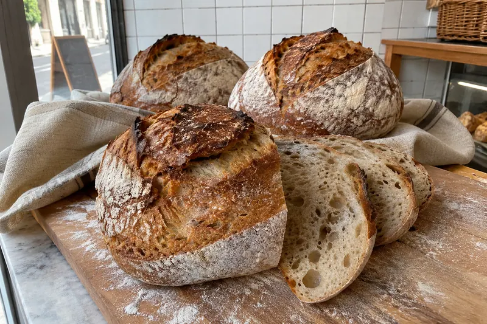
Panes especiales (por encargo)
Del obrador
Fotos de nuestro mostrador y de lo que sale cada día del horno.
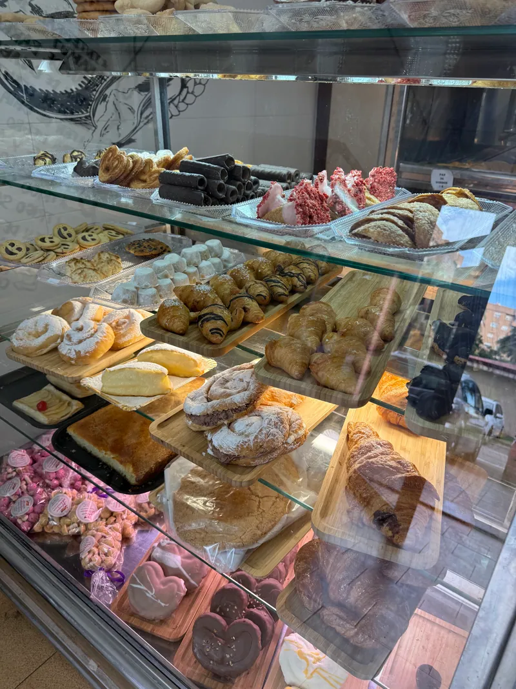
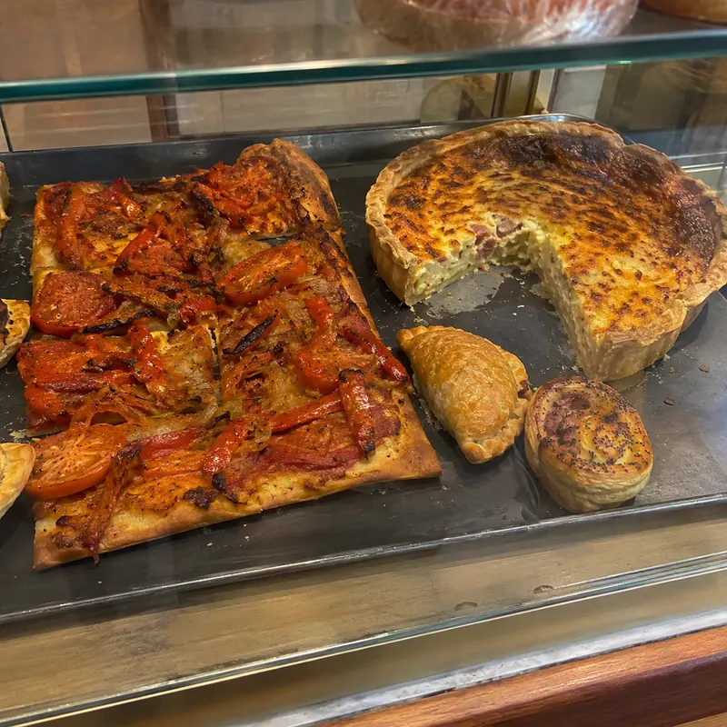
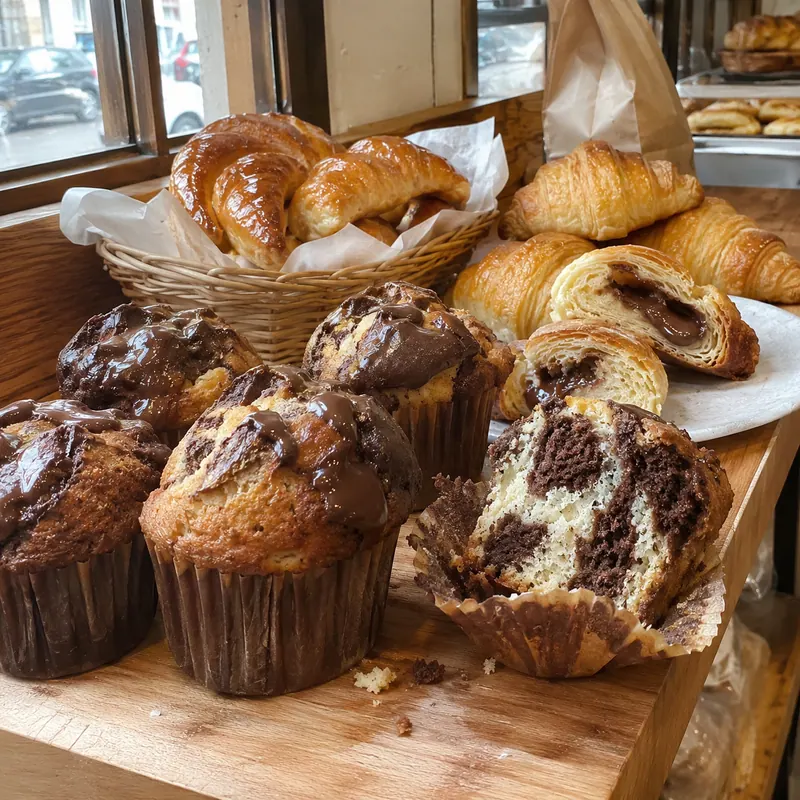
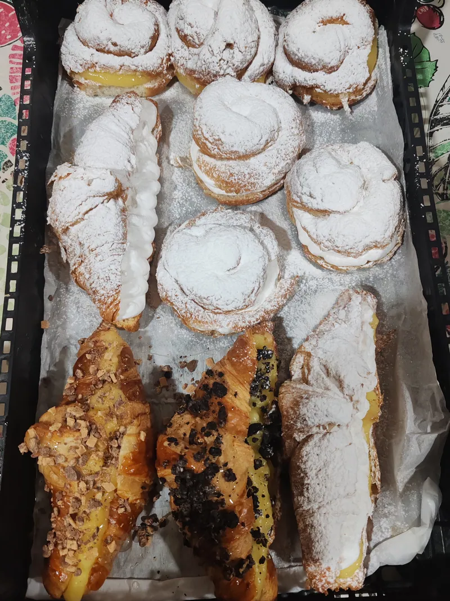
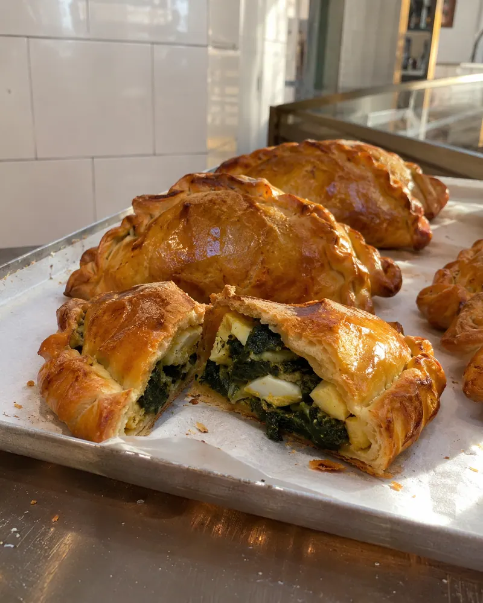
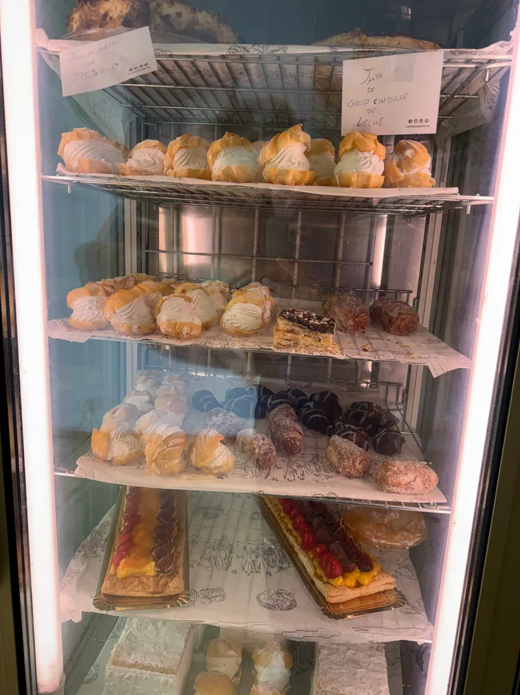
Encargos
Cumpleaños, comidas familiares, el almuerzo de la oficina… Dinos qué necesitas, para cuántos y para cuándo, y te lo preparamos. También tartas para grupos grandes.
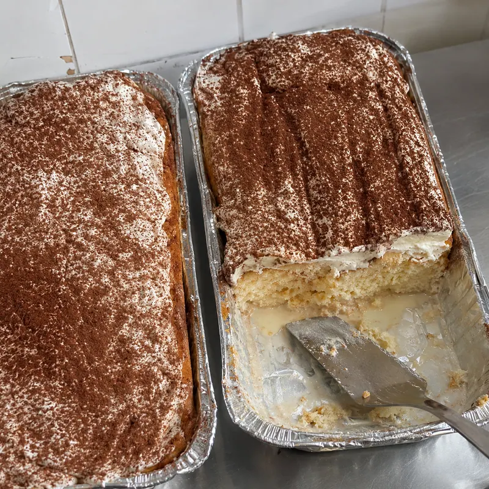
¿nos conociste por Too Good To Go?
Muchos vecinos nos descubrieron con un pack sorpresa de final del día, y siguen viniendo. Lo que no se vende no se tira: búscanos en la app.
Opiniones
Es un local pequeño que huele de maravilla. Buena variedad de productos dulces y salados. Posibilidad de encargar panes de diferentes tipos. La atención, ¡de 10!
Horno pastelería tradicional, de los de toda la vida, donde se elabora un pan excelente, y con una repostería salada y dulce impresionante.
Pastelería fresca. Hace tortas por encargo y para grupos grandes. Es chiquito pero tiene todo bien organizado.
No he probado unas empanadillas de verdura con tanta calidad. Las mejores. Y las tartas, otro 100.
La otra vez me llevé una tarta de queso espectacular. Es imposible salir sin comprar nada.
Me pedí una empanadilla de habas con longaniza. Buenísima, todo casero hecho allí. Ya no se ven hornitos de siempre.
Todo muy bueno, tanto lo salado como lo dulce. El dueño te transmite la pasión que pone en su trabajo.
Nos mudamos al barrio hace poco y se ha convertido en uno de nuestros sitios de cabecera.
lo último del horno
@hornoabraham_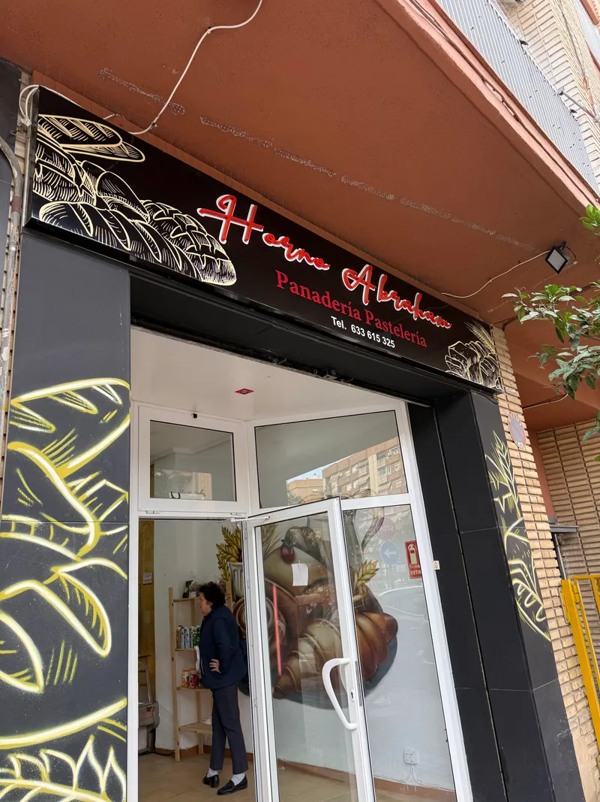
Visítanos
C/ de Tomás de Villarroya, 11 · Jesús, 46017 València
A un paso de la Cruz Cubierta de San Vicente Mártir.
| Lunes | 8:00–14:30 |
|---|---|
| Martes | 8:00–14:30 y 17:00–19:30 |
| Miércoles | 8:00–14:30 y 17:00–19:30 |
| Jueves | 8:00–14:30 y 17:00–19:30 |
| Viernes | 8:00–14:30 y 17:00–19:30 |
| Sábado | 8:00–14:30 |
| Domingo | 8:00–14:30 |